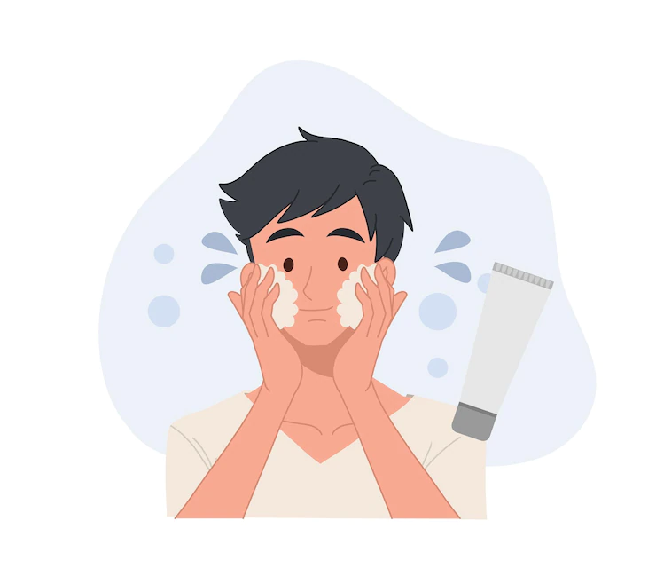
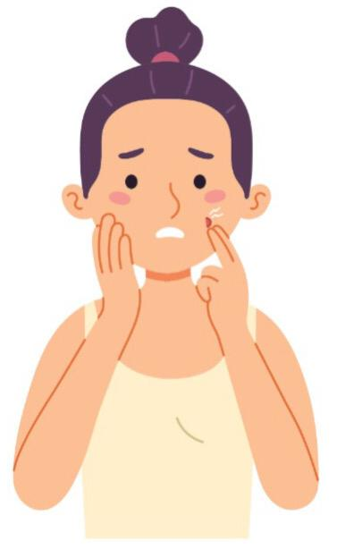

Ducharte cada día reseca la piel.
VERDAD: La ducha es necesaria para sentirse fresco y limpio, pero hacerlo a diario perjudica la piel.
La explicación está en que el agua caliente y los geles y jabones (sus componentes
químicos) disuelven la grasa natural, que es la que la protege y mantiene hidratada. Si bien hay
muchas opiniones sobre cuántas veces deberíamos ducharnos, la mayoría de expertos aconseja una al
día y solo en zonas sensibles, como genitales, manos, pies y axilas, y prescindible el resto.
El estrés provoca arrugas.
VERDAD: El colágeno es el responsable de que nuestra piel mantenga su elasticidad y firmeza. Sin
embargo, en las épocas de estrés, nuestro organismo aumenta la producción de cortisol, una hormona
que estimula la degradación del colágeno y, por tanto, perjudica a nuestra dermis. Esta pérdida de
colágeno acelera la aparición de arrugas y líneas de expresión.
Protector solar solo en verano
FALSO: siempre es necesario colocarlo, incluso si estamos en casa. Este producto es efectivo para el
cuidado ante diferentes tipos de radiaciones como la solar y la luz azul de pantallas. Es importante
colocar cada 4 horas y si estás en la nieve, tené en cuenta que refleja la radiación en niveles muy
altos, por lo que es indispensable su uso.
Los hombres no necesitan rutina de skin care
FALSO: Los hombres también necesitan skin care de acuerdo con sus necesidades y cada vez más, se ven
hombres preocupados por su piel. 👨🏼🦲👨🏻
Explotar granos es bueno para la piel
FALSO: En ningún caso debemos manipular los granitos porque corremos el riesgo de infección, hacer una herida y que posteriormente la cicatriz que queda produzca una mancha post inflamatoria.
Los remedios caseros sirven para tratar puntos negros y espinillas
FALSO: Los remedios caseros que se encuentran en internet para tratar los puntos negros y espinillas como el limón, la crema dental, el bicarbonato de sodio e incluso alcohol etílico, entre otros, pueden irritar y empeorar el aspecto del rostro debido a que alteran el pH de la piel.
¿Los productos coreanos blanquean la piel?
FALSO: Porque solo ese efecto blanqueador es producido por el Dioxido de Titaneo con lo que están compuesto sus producto, pero ninguno es para dejar a una piel morena como blanca. Y si encuentras algún producto blanqueante, es sólo un efecto temporal.


El sérum se puede usar para sustituir a la hidratante
FALSO: Los sérum tratan problemas concretos con una concentración de principios activos (específicos para ese trastorno) mayor. Pueden utilizarse para combatir las manchas, por falta de luminosidad o por deshidratación, pero nunca podrán sustituir la acción de una crema específica para tu tipo de piel
Comer bien ayuda a realzar la belleza de la piel
VERDADERO. Nutrir desde dentro las diferentes capas de la dermis no solo ayuda a que nos veamos mejor, sino que es completamente imprescindible para conseguirlo. De hecho, no solo resulta clave llevar una dieta sana y equilibrada, sino también beber 2 litros de agua diarios. De esta manera, las células se hidratan desde dentro.
El acné es un problema de pubertad
Totalmente un mito. El acné puede aparecer en cualquier etapa de la vida, aunque durante la pubertad es cuando puede ser más común debido a los cambios hormonales.